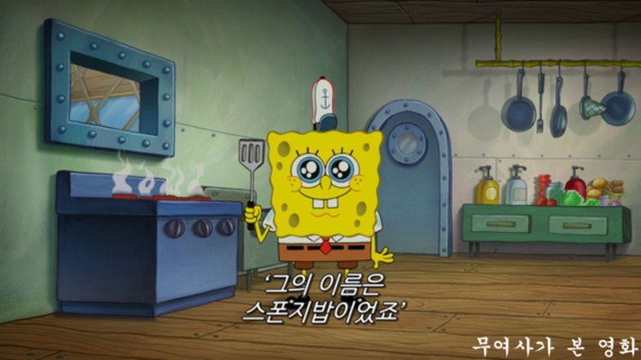
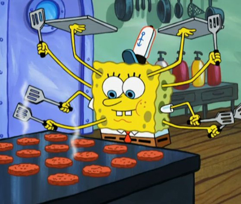

사로의 겨울방학
빠라빠빠빠~
맥도날드 알바생이 되었습니다. 처음에는 버거를 만드는 순서 외우는데에 엄청 고생했지만 이젠 맥도날드 마스터가 되었습니다. 그래도 제발 롯데리아 가세요.

셀카쟁이의 갤레기 탈출
셀카를 찍으면 오이처럼 나와버리는 갤럭시 핸드폰. 예전부터 갤럭시 핸드폰을 사용했지만, 셀카 찍는걸 너무나도 좋아해서 주변 친구들의 아이폰으로 사진을 찍던 나에게 진짜 나의 아이폰이 생겼다. 하루에 셀카 오조오억장 찍을 수 있다. 행복하다.